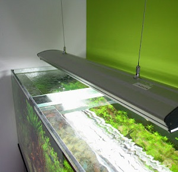

Osvětlení
Jak na to?
- Škrabky na sklo
- Magnetická stěrka
- Cena: 500 - 5500 Kč
- Je nutné osvětlení? ano
Osvětlení akvária je klíčovou součástí akvaristiky, protože ovlivňuje zdraví rostlin, ryb i celkový vzhled nádrže. Správné osvětlení podporuje fotosyntézu u rostlin,
reguluje biorytmy ryb a vytváří estetický efekt, který zvýrazňuje barvy obyvatel akvária.
LED osvětlení:
Výhody: energeticky úsporné, dlouhá životnost (až 50 000 hodin), nezahřívá vodu
Nevýhody: vyšší počáteční investice
Zářivky:
Výhody: cenově dostupné, dobré světelné pokrytí
Nevýhody: Vyšší spotřeba energie než LED, zahřívají vodu, potřeba pravidelné výměny (každých 6–12 měsíců)